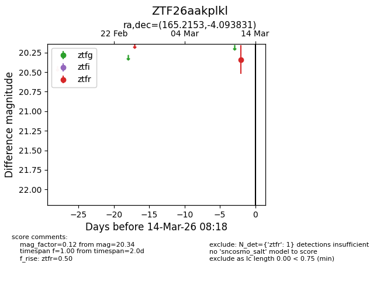
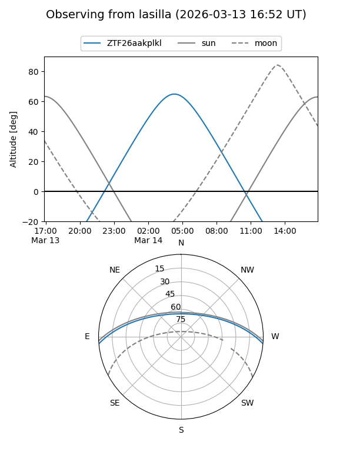
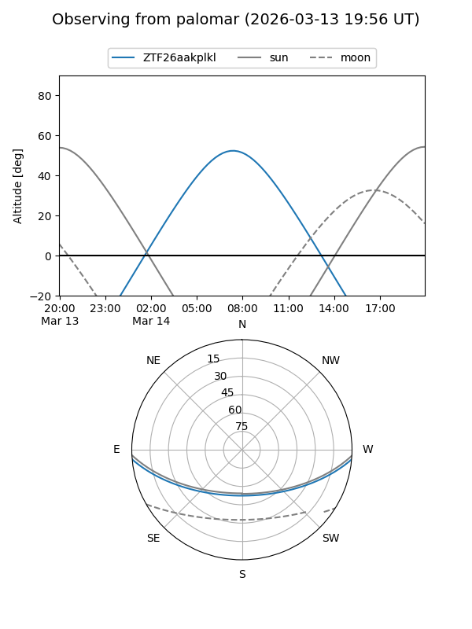

ZTF26aakplkl
Target ZTF26aakplkl at 2026-03-14 08:19
Aliases and brokers:
FINK: link
Lasair: link
ALeRCE: link
alt names
ZTF26aakplkl (ztf,fink_ztf)
Coordinates:
equatorial (ra, dec) = 165.2153,-4.09383
equatorial (HMS+DMS) = 11:00:51.68,-04:05:37.79
galactic (l, b) = (258.1565,+48.92311)
Flags:
Photometry:
last ztfr=20.34
1 ztfr detections
Lightcurve

Visibility


Additional plots